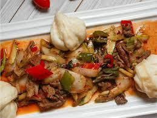

Sai recipe

Description
it is an uyghur dish it is like a soup but you can it with bread , nuddles, rice or steamed bans.
Ingridients for soup
- 1/2 lb beef chuck (I use top round roast)r
- 1/2 oil
- 1 medium onion
- 1 green bell pepper (I mostly use half yellow, half green pepper)
- 1 medium carrot/li>
- 3 small potatoes
- 3 large cloves of garlic
- 1 medium tomato
- 1 tsp tomato paste (optional)
- 1/2 tsp black pepper
- 1 tsp ground cumin
- 2 tsp salt
- 8 glasses of water
Instructions for dough
- In a medium bowl mix warm water, eggs, salt well. Add flour and knead the mixture for 10-15 minutes, creating a nice, springy dough
- Make the dough round and cover with a plastic wrap or with the container it was kneaded in. Let the dough rest for 15-20 minutes
Instructions for soup
- Wash all of the vegetables with cold water. Cut onions in 1/4 inch half circles. Cut peppers in 1 inch thick strips.
- Julienne carrots thinly. Peel the skin off potatoes, wash them and cut them in bigger cubes.
- You can use minced garlic, but I prefer to chop it, because it tastes better that way. Slice the tomato thinly. Julienne the meat
- Pre-heat your Wok on high heat, add oil. Toss the julienned meat into the Wok and stir-fry until light-brown. Add the onions to the meat. Add spices (black pepper, cumin, salt) and stir fry until onions are golden in color.
- Add the tomato, tomato paste and half of the chopped garlic. Mix everything well and stir-fry until tomatoes are nicely soft.
- Add the remaining vegetables. Mix well and stir-fry for another 4 minutes.
You are frying everything on high heat, so do not forget to keep stirring the ingredients.
Otherwise, they might stick to the bottom of the Wok. Add water and turn the heat down to medium.
Let the soup simmer for 40 minutes.
Tip: I always pre-boil water for these kinds of soups. In about 20 minutes, add the remaining garli
Home